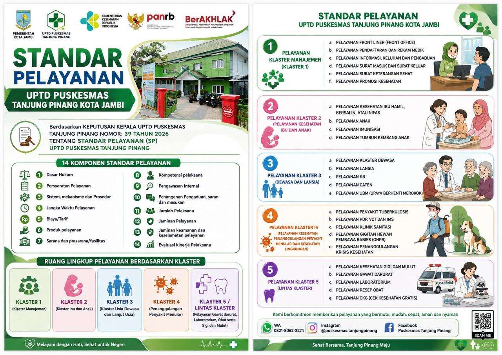

🔍 Klik untuk perbesarPendaftaran & Rekam Medik
Persyaratan: KTP/KK, kartu jaminan kesehatan (BPJS/KIS), dan buku UKS/buku berobat sesuai kebutuhan.
Alur: pasien datang → menyerahkan kartu → proses pendaftaran → menunggu panggilan sesuai ruangan/klaster.
Batas pendaftaran: Mobile JKN 12.30 WIB; langsung di Puskesmas 13.30 WIB.
Waktu: pasien baru sekitar 5 menit; pasien lama 1–3 menit. Biaya: umum Rp5.000; BPJS/UKS gratis.
Ibu Hamil, Bersalin & Nifas
Pelayanan KIA termasuk pemeriksaan antenatal dan tindak lanjut sesuai kondisi.
Pelayanan Anak
Pemeriksaan anak, kajian awal, pemeriksaan dokter, terapi, dan rujukan bila diperlukan.
Imunisasi
Pelayanan imunisasi melalui alur pendaftaran, pemeriksaan, imunisasi, dan tindak lanjut.
Tumbuh Kembang Anak
Pemantauan pertumbuhan, perkembangan, edukasi, dan rujukan bila ditemukan gangguan.
Keluarga Berencana (KB)
Konsultasi dan tindakan kontrasepsi termasuk suntikan, IUD, dan implan sesuai indikasi.
Calon Pengantin (Caten)
Pemeriksaan kesehatan reproduksi, laboratorium, imunisasi tetanus, dan konseling pranikah.
Pelayanan Dewasa
Pemeriksaan kesehatan dewasa dengan dukungan konseling gizi, UBM, sanitasi, laboratorium, dan farmasi sesuai kebutuhan.
Pelayanan Lansia
Pemeriksaan dan pemantauan kesehatan lansia dengan memperhatikan kondisi dan risiko pasien.
Upaya Berhenti Merokok (UBM)
Konseling dan pendampingan untuk membantu masyarakat mengurangi dan berhenti menggunakan produk tembakau/rokok elektronik.
Pelayanan Tuberkulosis
Pelayanan TB melalui pemeriksaan klinis, TCM/dahak sesuai indikasi, pengobatan, edukasi, dan rujukan bila diperlukan.
Gigitan Hewan Pembawa Rabies (GHPR)
Penanganan gigitan/cakaran/jilatan hewan penular rabies melalui triase, perawatan luka, penilaian pajanan, vaksinasi sesuai indikasi, dan rujukan bila diperlukan.
Kesehatan Gigi & Mulut
Pemeriksaan dan tindakan kesehatan gigi dan mulut dengan penerapan pencegahan infeksi dan perlindungan pasien.
Laboratorium
Pemeriksaan laboratorium sebagai layanan penunjang pelayanan kesehatan sesuai permintaan klinis.
Resep Obat
Pelayanan resep obat berdasarkan resep dokter/tenaga medis dengan proses penyiapan dan penyerahan obat.
Gawat Darurat
Penanganan kegawatdaruratan, stabilisasi, dan rujukan sesuai kondisi pasien.
Cek Kesehatan Gratis (CKG)
Pendaftaran, verifikasi identitas, skrining awal, pemeriksaan sesuai kelompok usia, edukasi, dan tindak lanjut bila diperlukan.
14 komponen Standar Pelayanan
SK 39 Tahun 2026 menetapkan 14 komponen sebagai acuan penyelenggaraan dan penilaian pelayanan publik.
1–4 · Dasar, persyaratan, mekanisme, waktu
5–8 · Biaya, produk, fasilitas, kompetensi
9–14 · Pengawasan, pengaduan, pelaksana, jaminan, evaluasi
Catatan: ringkasan di atas disusun dari SK Kepala UPTD Puskesmas Tanjung Pinang Nomor 39 Tahun 2026. Untuk tarif laboratorium dan detail teknis tertentu, ikuti ketentuan resmi yang berlaku di Puskesmas.